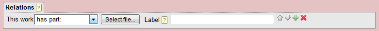
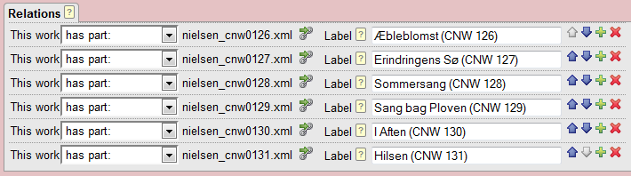
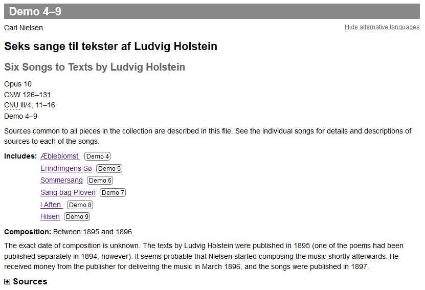

Working with relations: Creating a music anthology
A distinction should be made between anthologies regarded as
one work and anthologies regarded as a collection of individual works.
For instance, a song cycle may be regarded as one work or not,
depending on the circumstances, the project's aim etc. The decision
implies different workflows.
Anthologies regarded as one work are simply works with a number of constituent components, and they are treated just like any other work with a number of movements. The components are defined at the Music tab:
- Near the bottom of the page, create the desired number of
components using the
 add buttons.
add buttons. - Save your work and start editing the components one at a
time by clicking the component's
 edit button.
edit button. - Enter the details about the component, such as the title and the text author.
- Click the "save and close" button to save your work and return to the Music tab.
Anthologies of individual works are a little more complicated. They can be created as separate works (files), linked together by work-to-work relations:

- First, create and save the individual works. However, sources representing the entire anthology should not be defined at this stage.
- Then, create another work to represent the anthology. At the Work tab, start defining relations to the contained works by clicking the "Add relation" button.
- Select the "has part:" relation ("part" in this case is not
to be understood musically).
 - Open the works browser by clicking the "Select file..."
button. In the works browser, locate and click the desired work.
It may be convenient to narrow the search to a specific file collection or enter search terms such as the title.
Please note that the file browser may need some time to load and to update.

(If you know the work's file name, you may also enter it as the target attribute using the attribute editor). - Repeat this with each of the contained works and save your
work. You should end up with something like this:
 - Add any other desired information about the anthology, such as title, source descriptions etc.
Remember that relations are bidirectional. In order to create
links both ways (from the anthology to the individual works and back),
edit each of the contained works to add a relation back to the
anthology. You have easy access to the contained works (and back)
clicking the "Go to linked resource" icon  .
.
In the HTML preview, the result could look something like the following:
